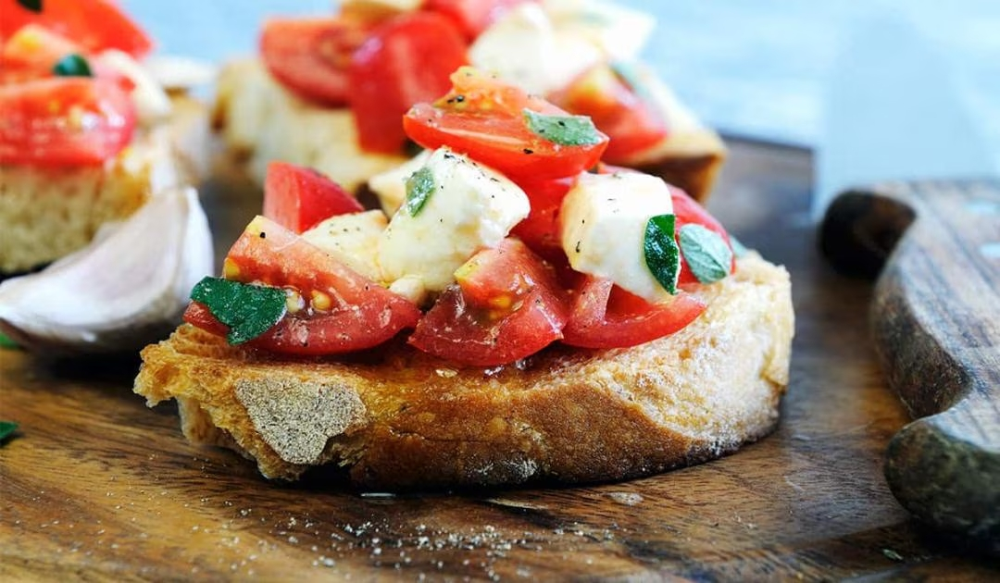

Bruschettas de Tomate y Albahaca

Ingredientes:
- 1 pan baguette cortado en rodajas
- 3 tomates perita picados
- Hojas de albahaca fresca
- Aceite de oliva, ajo, sal y pimienta
Preparación:
- Tostar las rodajas de pan.
- Frotar un diente de ajo sobre el pan tostado.
- Mezclar el tomate, la albahaca, el aceite, sal y pimienta.
- Servir la mezcla sobre los panes y disfrutar.